1.1 Componentes internos
1.1.1 CPU
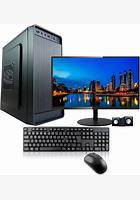Componente é o cérebro de qualquer computador, celular ou tablet, responsável por executar tarefas e dar vida aos seus aplicativos; entenda tudo sobre a peça
1.1.2 Armazenamento
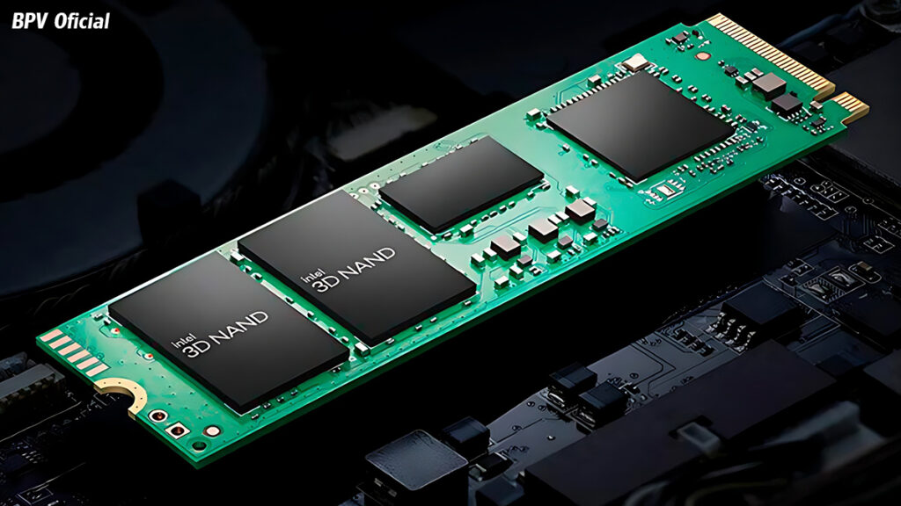O termo armazenamento pode se referir a diferentes soluções
1.1.3 Memória
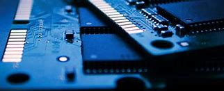A memória é a capacidade de adquirir, armazenar e recuperar (evocar) informações disponíveis, seja internamente, no cérebro (memória biológica[2]), seja externamente, em dispositivos artificiais (memória artificial). Também é o armazenamento de informações e fatos obtidos através de experiências ouvidas ou vividas.
1.1.4 Fonte de alimentação
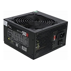A fonte de alimentação é um dispositivo essencial que converte energia elétrica de uma fonte (como a rede elétrica) em uma forma utilizável para alimentar circuitos eletrônicos e dispositivos.
1.2 Componentes externos
1.2.1 Teclado
Na computação, o teclado de computador é um dispositivo que possui uma série de botões ou teclas, utilizado para inserir dados no computador.
1.2.2 Monitor de vídeo
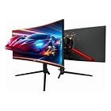Um monitor é um dispositivo para exibir imagens conectando-o por meio de um cabo a uma porta de uma placa de vídeo ou placa-mãe. Trata-se de um equipamento de informática que permite ampliar as capacidades do aparelho, transmitindo cores detalhadas, linhas e toda a imagem.
1.2.3 Mouse
O mouse é um dos periféricos mais fundamentais para um computador. Nos sistemas operacionais atuais, o uso de um mouse é quase que uma necessidade, já que sua utilização facilita enormemente a navegação do usuários pelos programas e recursos do computador.
1.2.4 Impressora
Uma impressora é um dispositivo que imprime. O verbo imprimir, por sua vez, faz referência a marcar letras e outros caracteres gráficos num papel ou noutro material.
1.2.5 Plotter
Um plotter de impressão é um equipamento utilizado para produzir impressões em grandes formatos, como cartazes, banners, adesivos, mapas e muito mais. Diferente das impressoras comuns, os plotters são projetados para trabalhar com materiais mais robustos e dimensões maiores, garantindo resultados de alta qualidade e durabilidade.
1.2.6 Scanner

Um scanner é um dispositivo de entrada de hardware que converte imagens ou documentos em papel em formato digital. Ele captura imagens de fotografias, desenhos, ilustrações, textos e outros tipos de documentos para edição e exibição em um computador.
1.2.7 Gabinete
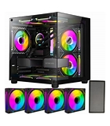Para escolher um gabinete para o seu computador, considere os seguintes.
1.2.8 Web Cam
Uma webcam é uma câmera digital conectada a um computador para transmitir vídeo ao vivo em tempo real. Na maioria dos casos, as webcams são usadas para reuniões online, conferências na Web e aprendizado online, mas existem alguns outros usos para elas. E nem todas as webcams são iguais. Aqui está tudo o que você precisa saber sobre webcams e como elas funcionam.
1.2.9 Caixas de som
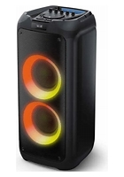Caixa de som é um equipamento de áudio com um ou mais alto-falantes que transforma sinais elétricos em som. Usado para ouvir músicas, assistir a filmes ou jogar, o periférico está presente em diversos ambientes e facilita a reprodução de conteúdo sonoro com mais potência e qualidade.
1.2.10 Microfone
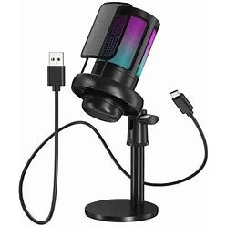Os microfones possuem a finalidade de transformar ondas sonoras em sinais elétricos, que serão dirigidos para amplificadores, gravadores ou algum outro tipo de equipamento. Em outras palavras, os microfones são transdutores eletroacústicos, ou seja, transformam a energia proveniente das ondas sonoras em energia elétrica.
1.2.11 Head Set
Headset, também conhecido como fone operador, fone de cabeça, headfone ou handsfree é um conjunto formado por um fone de ouvido com controle de volume e um microfone acoplado para utilização em computadores multimídia e sistemas de telemarketing, devido à facilidade e praticidade que ele possui.
1.3 Interfaces de entrada e saída
1.3.1 Interfaces sem fio
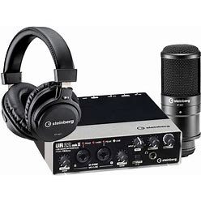A evolução das conexões wireless (sem fio) foi crucial para o desenvolvimento e a popularização de celulares e outros dispositivos móveis; saiba mais sobre os diversos tipos, limitações e benefícios
1.3.2 Áudio
Áudio é um termo que vem do idioma inglês, embora seu antecedente etimológico mais distante seja encontrado no latim. O conceito de áudio é usado para nomear a técnica que permite gravar, transmitir e reproduzir sons.
1.3.3 Rede (Ethernet)
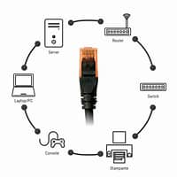A rede Ethernet é uma tecnologia de comunicação que conecta dispositivos em redes locais (LAN) usando cabos, permitindo a transmissão de dados de forma eficiente e confiável.
1.3.4 VGA

O VGA é um padrão gráfico que foi a base de monitores, placas de vídeo e notebooks por muito tempo. É mais conhecido pelo seu inconfundível conector de 15 pinos. Ao longo dos anos, o VGA evoluiu e passou a identificar tipos de resolução, mas até hoje todo mundo se lembra é dos cabos quando ouve a silga para Video Graphics Array.
1.3.5 HDMI
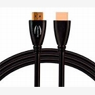O High-Definition Multimedia Interface, ou HDMI, é um protocolo de conexão de áudio e vídeo de alta definição, que não possui compressão de sinal por padrão e é atualmente utilizado pela maioria dos dispositivos multimídia, incluindo consoles de videogame, computadores, TVs e monitores.
1.3.6 USB
USB, em português, porta serial universal) é um padrão da indústria que estabelece especificações para cabos, conectores e protocolos para conexão, comunicação e alimentação (interface) entre computadores, periféricos e outros computadores.[3] Existe uma ampla variedade de hardware USB, incluindo 14 tipos diferentes de conectores, dos quais o USB-C é o mais recente e o único não obsoleto atualmente.